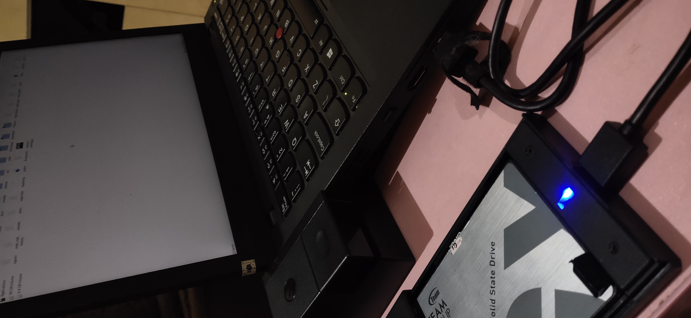

+------------------------------------------------------------------------------+ | | | /home/sukalaper blog/ paper/ about/ | | | +------------------------------------------------------------------------------+ Akhirnya, Dual Boot Menjadi Pilihan ________________________________________________________________________________ Ikhtisar ................................................................. [1.0] Referensi ................................................................ [2.0] [1.0] Ikhtisar ________________________________________________________________________________ Sebagai laptop hopping (hopping saya ambil dari istilah distro hopping [1]) yang dapat diartikan sebagai "loncatan" atau bisa juga sebuah "ketidak-tetapan". Catatan ini adalah pengalaman saya menggunakan beberapa Thinkpad hingga akhirnya mendapati unit yang memiliki SSD M.2 [2] yang sudah dilengkapi konverter bawaan. Tentu saja karena hal ini saya tidak bisa mengakses data pada SSD 2.5 milik saya dan mau tidak mau saya harus membeli lagi kabel SSD 2.5 secara terpisah agar bisa mengakses penyimpanan SSD 2.5 tersebut. Beruntungnya saya masih memiliki enclosure untuk SSD 2.5. Thinkpad kali ini berbekal M.2 yang bisa dibilang kecil, ukurannya hanya 128GB. Jadi saya harus pintar-pintar mengatur partisi untuk melakukan dual boot, dalam beberapa kasus pada Arch Linux saya tidak memerlukan partisi yang besar, sebagian data penting telah saya pisahkan pada HDD yang memang telah saya khususkan untuk data-data pribadi. Kira-kira kurang lebih 1 tahun saya menggunakan cara ini. Thinkpad X270 ├── M.2 SSD │ └── Windows 11 └── Enclosure SSD 2.5 └── Arch Linux
Pilihan ini bertujuan untuk membiarkan M.2 beristirahat damai dengan Windows 11 didalamnya. Sejujurnya, ini merepotkan mengingat saya yang suka berpindah-pindah ruang kerja dan harus jauh lebih berhati-hati. Enclosure ini sudah cukup sering terjatuh hingga pada akhirnya kerusakan adalah akhir dari kisahnya. Dual boot adalah pilihan sementara sampai nanti saya memiliki rezeki lebih untuk membeli penyimpanan baru yang ukurannya lebih besar. Jika teman-teman ingin melihat skema partisi saya saat ini, ini dia. NAME MAJ:MIN RM SIZE RO TYPE MOUNTPOINTS sda 8:0 0 119.2G 0 disk ├─sda1 8:1 0 7.8G 0 part ├─sda2 8:2 0 100M 0 part ├─sda3 8:3 0 16M 0 part ├─sda4 8:4 0 91.1G 0 part ├─sda5 8:5 0 674M 0 part ├─sda6 8:6 0 1G 0 part /boot └─sda7 8:7 0 18.5G 0 part / sda1 - sda5 adalah bagian dari Windows sedangkan sda6 - sda7 adalah bagian dari Arch. [2.0] Referensi ________________________________________________________________________________ [1] https://www.reddit.com/r/DistroHopping/ [2] https://www.bhinneka.com/blog/jenis-ssd/ ________________________________________________________________________________ Sukalaper © 2024, All rights reserved.